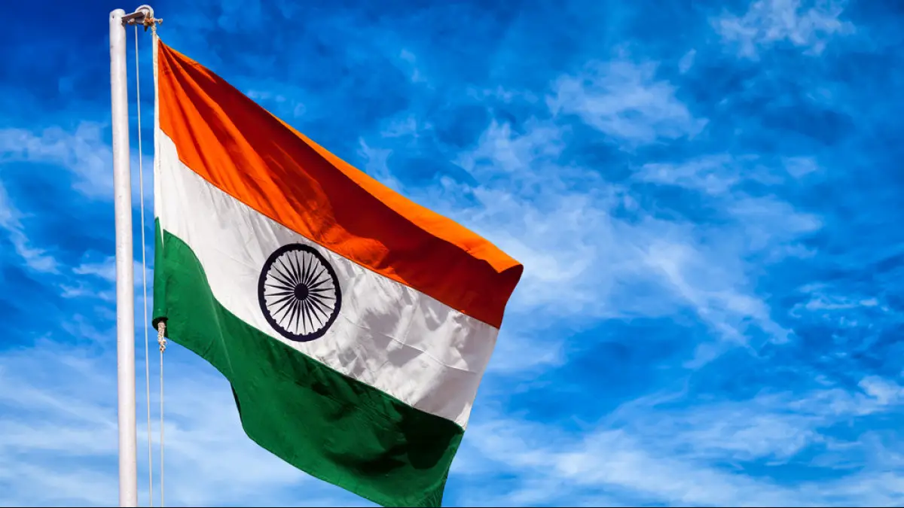

Journey towards our Independence
India has a long and glorious history of its struggle for Independence.
The times it has been ruled by foreign powers have seen an extraordinary unity amongst the people in India.
During this time, people of India have stayed close to each other, no matter what caste, religion, state or race they belonged to.
Now, India has earned its freedom, which cannot be achieved without making great efforts for it.
The Indian freedom movement began in 1857.
It was a large scale campaign headed by Indian nationalist leaders who sought to liberate India from British rule.

Here is a quick timeline between 1857 to 1947
1. First war of Independence - 1857
2. The creation of the Indian National Congress - 1885
3. The Swadeshi Movement - 1905-1908
4. Partition of Bengal - 1905
5. The Rowlatt Act and Jallianwala Bagh Massacre - 1919
6. Non-Cooperation Movement - 1920
7. The boycott of the Simon Commission - 1927
8. Purna Swaraj(Complete Independence) Campaign - 1929
9. Civil disobedience Movement - 1930
10. Gandhi-Irwin pact and the Round table conferences - 1931 and 1930-1932
11. Government of India Act - 1935
12. Quit India Movement - 1942